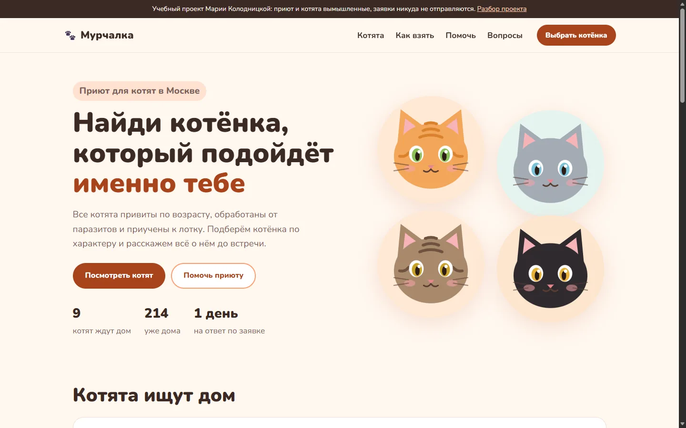
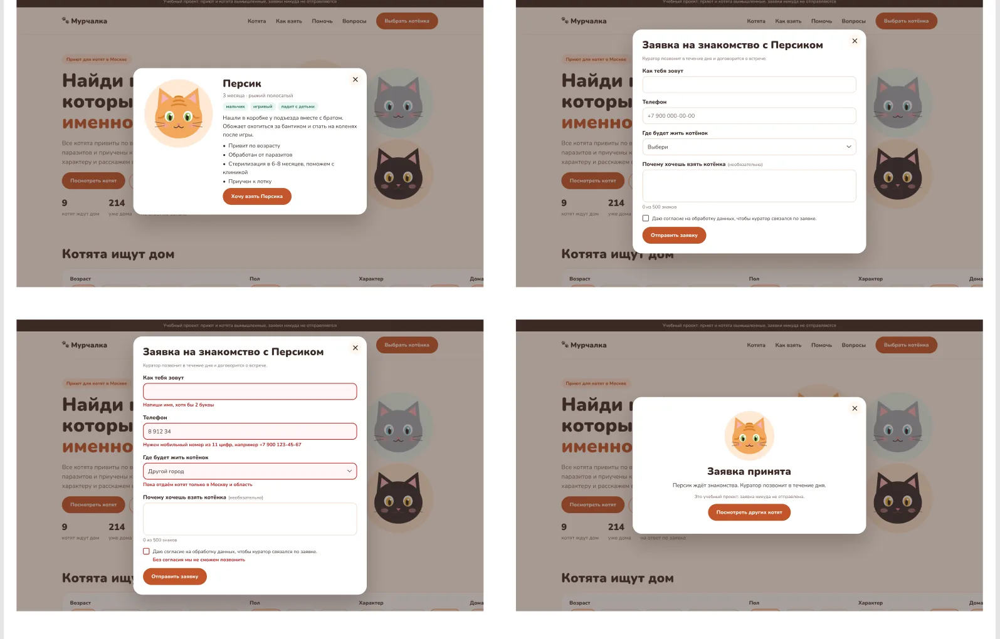
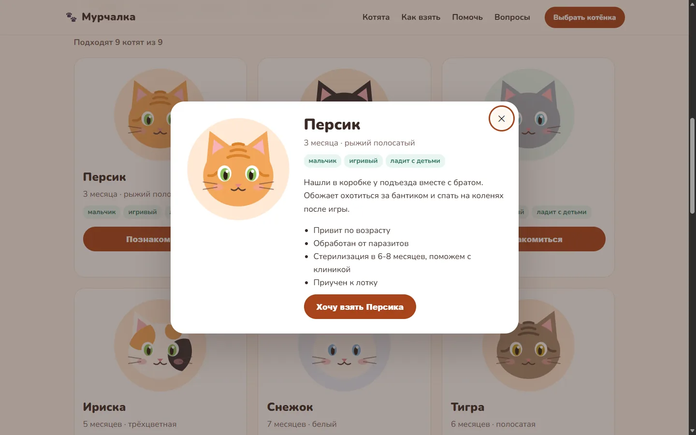
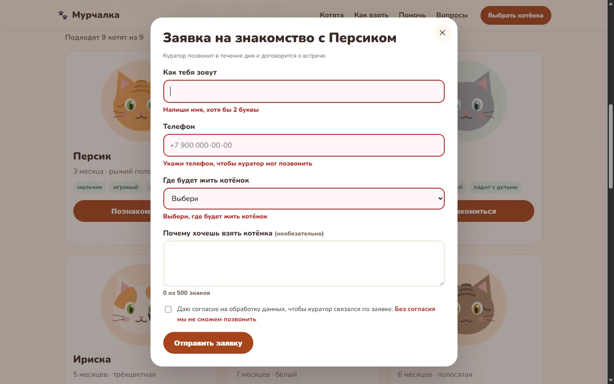
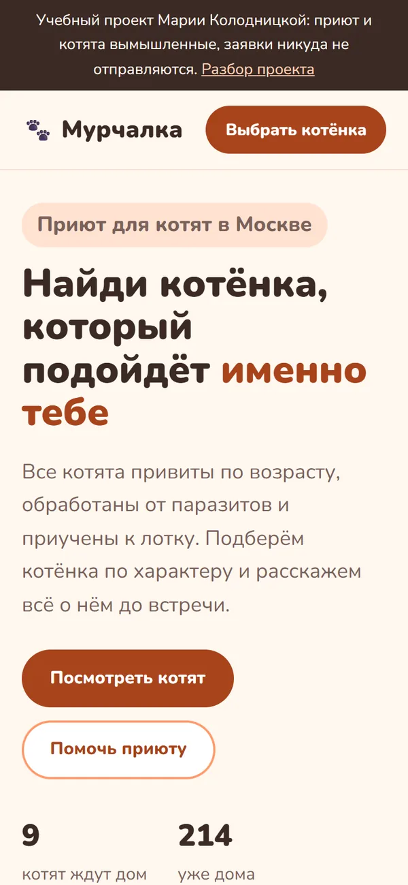

мини-сайт · учебный проект
Приют котят (Мурчалка)
Задача
Сайт приюта, на котором человек подбирает котёнка под свою жизнь и оставляет заявку на знакомство. Куратору нужна заявка, по которой можно сразу звонить: имя, телефон и город.
Для кого
Семья или человек, который берёт котёнка впервые, чаще всего с телефона. Им важен не окрас, а то, уживётся ли котёнок с ребёнком или собакой и что будет после заявки.

Прототип
Сначала собрала в Figma главную для компьютера и телефона и четыре состояния окна. Кнопки и метки сделаны компонентами, экраны связаны в кликабельный сценарий: карточка Персика, "Познакомиться", "Хочу взять Персика", пустая форма с ошибками и экран "Заявка принята".

Решения и почему
Подбор
- Фильтры по жизни хозяина: возраст, характер, есть ли дома дети или собака. Окраса в фильтрах нет: по нему не выбирают, с кем жить 15 лет
- Счётчик "Подходят 2 котёнка из 9" меняется сразу и озвучивается скринридером
- Пустой результат не тупик: подсказка, какой фильтр обычно не так важен, и кнопка "Сбросить фильтры"
- В окне котёнка история и здоровье до заявки, чтобы решение принималось на сайте, а не в звонке
Заявка
- Три обязательных поля. Вопрос "почему" необязательный, с лимитом 500 знаков и счётчиком
- Ошибка рядом с полем и по-человечески: не "неверный формат", а пример правильного номера
- Фокус переходит на первое поле с ошибкой, ошибка связана с полем для скринридера
- Телефон принимается в любой записи: +7, 8, скобки, пробелы. Проверяются только цифры
- Ограничение "только Москва и область" видно сразу в форме, а не после звонка куратора
- Имена в падежах: "Хочу взять Персика", "Заявка на знакомство с Персиком"




Как проверяла
Прогнала форму и фильтры автотестом в Microsoft Edge: заполняла поля, нажимала кнопки и клавиши и сверяла тексты ошибок и фокус. Поле "почему" заполняла вводом с клавиатуры, а не подстановкой значения: только так проверяется лимит в 500 знаков.
| № | Что проверяю | Действие | Ожидаю | Получила | Итог |
|---|---|---|---|---|---|
| 1 | Пустая форма | Нажать "Отправить заявку" | Ошибки у имени, телефона, города и согласия, фокус на имени | 4 ошибки, фокус на имени | пройдено |
| 2 | Имя короче 2 букв | Имя "М" | "Напиши имя, хотя бы 2 буквы" | так и есть | пройдено |
| 3 | Цифры в имени | Имя "Маша1" | "В имени не должно быть цифр" | так и есть | пройдено |
| 4 | Имя из пробелов | Три пробела | Пробелы не считаются буквами | "Напиши имя, хотя бы 2 буквы" | пройдено |
| 5 | Телефон со скобками | +7 (900) 123-45-67 | Принят | принят | пройдено |
| 6 | Телефон через 8 слитно | 89001234567 | Принят | принят | пройдено |
| 7 | Короткий телефон | 8 912 34 | Ошибка с примером номера | "Нужен мобильный номер из 11 цифр, например +7 900 123-45-67" | пройдено |
| 8 | Городской номер | +7 495 123-45-67 | Ошибка: нужен мобильный | та же ошибка | пройдено |
| 9 | Номер другой страны | +1 900 123 45 67 | Ошибка | та же ошибка | пройдено |
| 10 | Другой город | Выбрать "Другой город" | Сразу объяснить ограничение | "Пока отдаём котят только в Москву и область" | пройдено |
| 11 | Без согласия | Не отмечать галочку | Ошибка у согласия, фокус на нём | так и есть | пройдено |
| 12 | Лимит текста | Набрать 600 знаков в поле "почему" | Вводится 500, счётчик "500 из 500" | 500 знаков, "500 из 500 знаков" | пройдено |
| 13 | Всё верно | Мария, +7 900 123-45-67, Москва, согласие | Экран "Заявка принята" | так и есть | пройдено |
| 14 | Фильтр без результатов | До 3 месяцев и спокойный | Подсказка и кнопка сброса | так и есть | пройдено |
| 15 | Возврат фокуса | Открыть окно с клавиатуры и нажать Esc | Фокус возвращается на кнопку "Познакомиться" | так и есть | пройдено |
Что нашла и исправила
- Контраст. axe нашёл ссылку с контрастом 4,3:1 при норме 4,5:1. Затемнила акцентный цвет с #C2552A до #A8441C. В прототипе остался старый цвет: так видно, что проверка нашла то, чего не было видно в макете.
- Красная рамка пропадала в фокусе. Стиль фокуса перебивал стиль ошибки, и у поля, на которое переводится фокус, рамка становилась персиковой. Заметила, пока рисовала состояние с ошибками в Figma.
- "Подходят 1 котёнок". Глагол не согласовывался с числом, теперь "Подходит 1 котёнок".
- Выбранный фильтр. Текст на персиковом фоне был 3,9:1, сделала темнее до 4,5:1.
После исправлений axe не находит нарушений WCAG 2.1 A и AA ни на странице, ни в окне заявки. На телефоне страница не уезжает вбок.


Что проверила бы на людях
- Понятно ли, что "Познакомиться" открывает подробности, а не сразу отправляет заявку
- Хватает ли истории и здоровья в окне, чтобы решиться, или люди всё равно хотят позвонить
- Не останавливает ли галочка согласия на последнем шаге